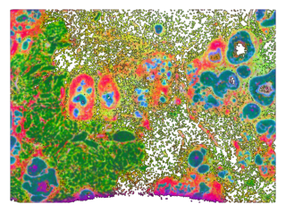

Human breast cancer
[1]:
%load_ext autoreload
%autoreload 2
import os
import squidpy as sq
import scanpy as sc
import numpy as np
from scipy import sparse
import math
import matplotlib.pyplot as plt
import pandas as pd
import anndata
from PIL import Image
import os
import sys
sys.path.append('/home/lixiangyu/zjx/')
import scanpy as sc
from SpaMOMA.SpaMOMA import SpaMOMA
/home/lixiangyu/anaconda3/envs/zjx_escnn/lib/python3.9/site-packages/torch/cuda/__init__.py:63: FutureWarning: The pynvml package is deprecated. Please install nvidia-ml-py instead. If you did not install pynvml directly, please report this to the maintainers of the package that installed pynvml for you.
import pynvml # type: ignore[import]
2026-02-18 19:33:51.119910: I tensorflow/core/util/port.cc:111] oneDNN custom operations are on. You may see slightly different numerical results due to floating-point round-off errors from different computation orders. To turn them off, set the environment variable `TF_ENABLE_ONEDNN_OPTS=0`.
2026-02-18 19:33:51.165175: E tensorflow/compiler/xla/stream_executor/cuda/cuda_dnn.cc:9342] Unable to register cuDNN factory: Attempting to register factory for plugin cuDNN when one has already been registered
2026-02-18 19:33:51.165220: E tensorflow/compiler/xla/stream_executor/cuda/cuda_fft.cc:609] Unable to register cuFFT factory: Attempting to register factory for plugin cuFFT when one has already been registered
2026-02-18 19:33:51.165256: E tensorflow/compiler/xla/stream_executor/cuda/cuda_blas.cc:1518] Unable to register cuBLAS factory: Attempting to register factory for plugin cuBLAS when one has already been registered
2026-02-18 19:33:51.175197: I tensorflow/core/platform/cpu_feature_guard.cc:182] This TensorFlow binary is optimized to use available CPU instructions in performance-critical operations.
To enable the following instructions: AVX2 AVX512F AVX512_VNNI FMA, in other operations, rebuild TensorFlow with the appropriate compiler flags.
2026-02-18 19:33:52.555297: W tensorflow/compiler/tf2tensorrt/utils/py_utils.cc:38] TF-TRT Warning: Could not find TensorRT
[2]:
# feature：rna/gene_activity_score/peak/protein/metabolite/img
save_directory = "./SpaMOMA_output/HBC/"
spamoma = SpaMOMA(save_dir=save_directory)
spamoma.add_slice(
sample_id="rep1", # 样本唯一ID
raw_data_path="./datasets/HBC/rep1.h5ad", # h5ad文件路径
feature="rna"
)
spamoma.add_slice(
sample_id="rep2_HE", # 样本唯一ID
raw_data_path="./datasets/HBC/rep2_HE.png", # h5ad文件路径
feature="img"
)
spamoma.set_reference('rep2_HE')
[3]:
print(f"aligning {[sid for sid in spamoma.input_slice_dict.keys() if sid != spamoma.reference_sample_id]} to {spamoma.reference_sample_id}")
aligning ['rep1'] to rep2_HE
[4]:
spamoma.preprocess_input_slices({
'rep2_HE':{
'downsample':False
}
})
preprocessing rna features...
WARNING: adata.X seems to be already log-transformed.
------Calculating spatial graph...
The graph contains 1148000 edges, 164000 cells.
7.0000 neighbors per cell on average.
Size of Input: (164000, 313)
2026-02-18 19:34:58.444077: W tensorflow/core/common_runtime/gpu/gpu_device.cc:2211] Cannot dlopen some GPU libraries. Please make sure the missing libraries mentioned above are installed properly if you would like to use GPU. Follow the guide at https://www.tensorflow.org/install/gpu for how to download and setup the required libraries for your platform.
Skipping registering GPU devices...
2026-02-18 19:34:58.451686: I tensorflow/compiler/mlir/mlir_graph_optimization_pass.cc:382] MLIR V1 optimization pass is not enabled
100%|██████████| 500/500 [14:51<00:00, 1.78s/it]

[5]:
spamoma.generate_imgs({
'rep1':{
'gaussian_sigma':0.8,
'max_distance_ratio':1.2,
}
})
generating spatial pattern image... gaussian_sigma:0.8, interpolation_method:linear, max_distance_ratio"1.2
saving image...

Img for rep1 is saved to /home/lixiangyu/zjx/test_SpaMOMA/SpaMOMA_output/HBC/rep1/RGB.png
Original image saved to: /home/lixiangyu/zjx/test_SpaMOMA/SpaMOMA_output/HBC/rep2_HE/RGB.png
[6]:
spamoma.input_slice_dict
[6]:
{'rep1': {'sample_id': 'rep1',
'raw_data_path': './datasets/HBC/rep1.h5ad',
'feature': 'rna',
'pseudo_color_key': 'pca',
'processed_data': AnnData object with n_obs × n_vars = 164000 × 313
obs: 'x_centroid', 'y_centroid', 'transcript_counts', 'control_probe_counts', 'control_codeword_counts', 'total_counts', 'cell_area', 'nucleus_area', 'n_counts', 'image_col', 'image_row', 'spot', 'img_x', 'img_y', 'spot_x', 'spot_y', 'batch', 'my_pixel_x', 'my_pixel_y'
var: 'gene_ids', 'feature_types', 'genome', 'highly_variable', 'highly_variable_rank', 'means', 'variances', 'variances_norm'
uns: 'log1p', 'hvg', 'spatial_neighbors', 'moranI'
obsm: 'he', 'image_coor', 'spatial', 'pca'
layers: 'raw'
obsp: 'spatial_connectivities', 'spatial_distances',
'SPI_path': '/home/lixiangyu/zjx/test_SpaMOMA/SpaMOMA_output/HBC/rep1/RGB.png'},
'rep2_HE': {'sample_id': 'rep2_HE',
'raw_data_path': './datasets/HBC/rep2_HE.png',
'feature': 'img',
'SPI_path': '/home/lixiangyu/zjx/test_SpaMOMA/SpaMOMA_output/HBC/rep2_HE/RGB.png'}}
[ ]:
spamoma.train(parallel_mode=True,coarse_gpu=1,fine_gpu=2)
[ ]:
spamoma.align_slices()